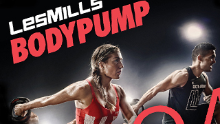

About
I am a Kiwi Graphic Designer who loves to create!
After completing my Bachelor of Graphic Design at AUT, I have worked as a print designer and Mac Operator, travelled the world on my OE, and am currently furthering my abilites by studying Front End Web Development at Yoobee ACG School of Design. Combining my Pre-press design experience with HTML and CSS knowledge is turning me into a multi disciplined designer with a wide range of skills.
A passionate gym-goer, traveler and beach lover, as well as a hard working, dedicated person, always punctual, polite, friendly and reliable. My strengths are that I am an independent, creative thinker with initiative to get the job done. Friendly, creative, I have an eye for detail and a good sense of humour. I relate well to people of all ages and walks of life and currently volunteer with the IHC, helping people with intellectual disabilities. I work well individually as well as in team situations, such as university assignments, music groups and teams I have previously worked with.
I'm available for freelance work - I'd love to hear from you so we can work together and create something exciting!
Skills
- Adobe
InDesign, Illustrator, Photoshop, Lightroom - HTML
- CSS
- SASS
- Microsoft
Word, Excel, PowerPoint
- Photography
- Photo Editing
- Type Setting
- Screen Printing
- Book Binding
- Hand Lettering
- Proofing
- Sales
- Customer service
- 
Work
- April 2013 - March 2015
Les Mills International Mac Operator.
Designing promotional material, book layouts, info graphics, Pre-press, photo editing, proofing and editing. - November 2012 - March 2013
Laura Ashley Home Store
Retail assistant and web store assistant. - July-August 2012
Volunteer English Tutor Madrid, during my OE. - February 2011 - June 2012
Presson Labels Graphic Designer & Receptionist.
Editing files, designing labels and promotional work for the company, prepping files for print, providing customer service on reception. - November 2010 - June 2012
Rainbow Screenprint Ltd Graphic designer.
Editing digital files, creating artwork, colour separations, prepping files for print. - 2010
Mr Vintage tshirts Work experience.
Design, screen printing, digital printing. - October 2009 - February 2011
Angela Daniel Jewellery Retail assistant.
Sales, jewellery repairs, custom designs and customer service. - December 2007 - October 2009
Hush Puppies shoes Retail assistant.
Sales, customer service, sole charge and cashing up. - December 2007 - April 2008
Consumer Link Conducting phone interview market research. - 2005
Rothesay Bay Bird Sanctuary Volunteer. Assisting cleaning and feeding. - Ongoing
Freelance Graphic Designer Wedding invites, company logos, websites, business cards, letterheads, manuals. - Ongoing
IHC Volunteer Assisting people with intellectual disabilites.